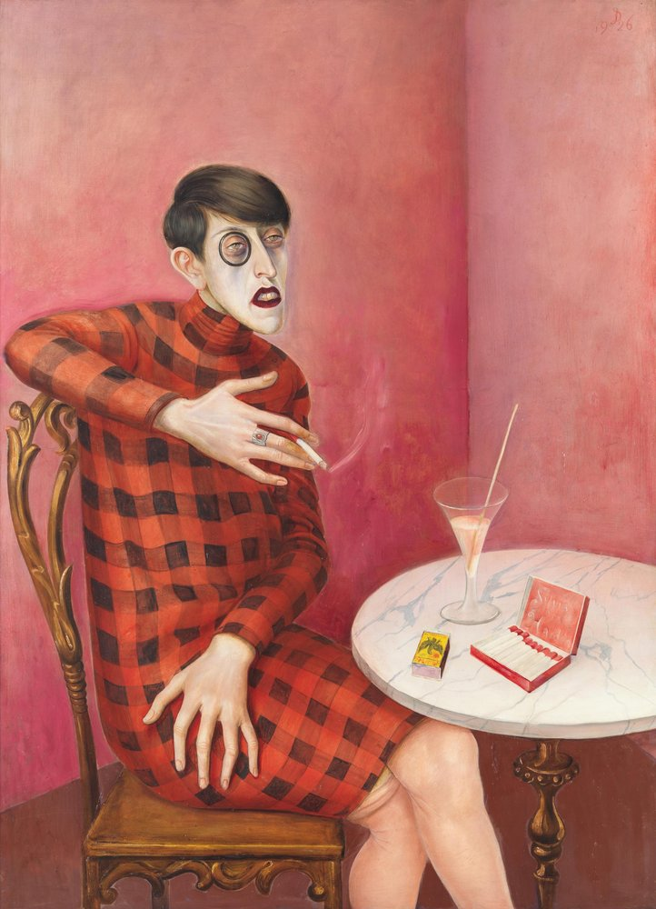

Portrait of the Journalist Sylvia von Harden
Otto Dix · 1926 · Oil and tempera on wood · 121 × 89 cm · Musée National d'Art Moderne, Paris
In copyright. Look and learn: shown for study, not for download.
By the sitter's own account, written in 1959, Dix met her on the street by chance and told her that he must paint her. She sat for several sessions over the following weeks. He worked in oil and tempera on a wood panel. On the table is a cigarette box marked with her name. The Musée National d'Art Moderne in Paris acquired the portrait from Dix in 1961.